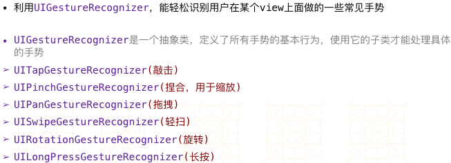
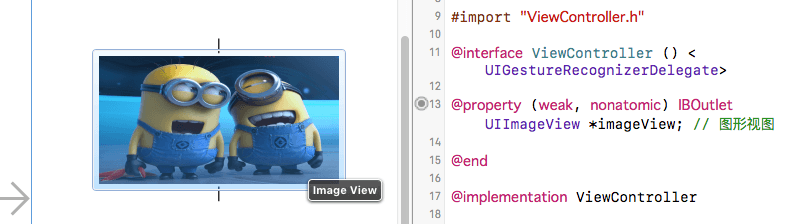
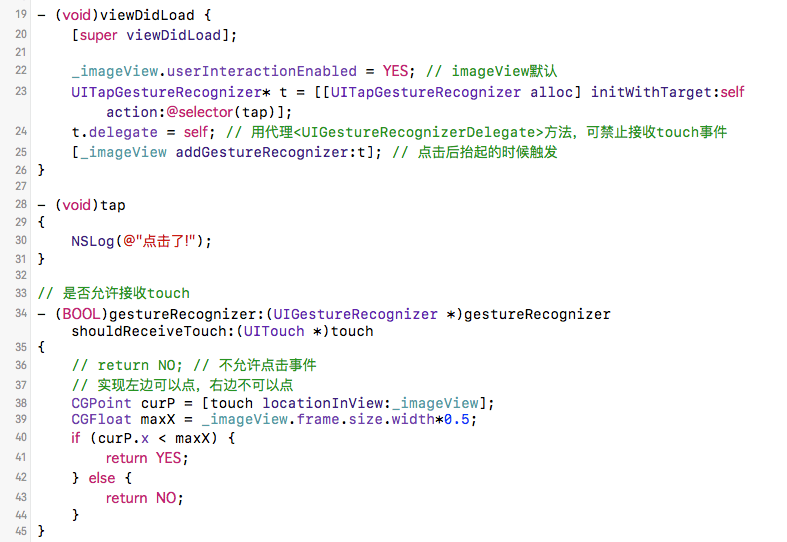
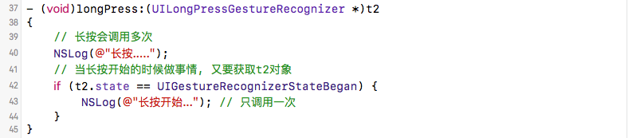
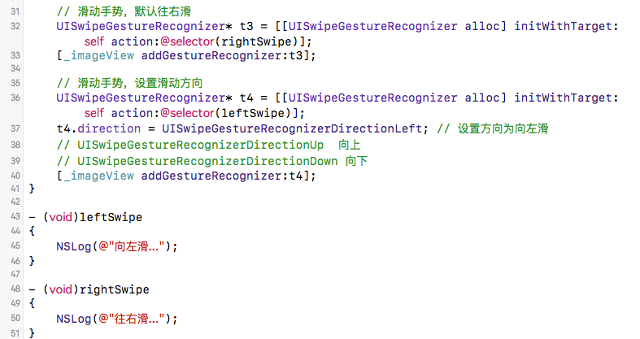

2016/11/14
Author: guoqzuo
iOS 手势UIGestureRecognizer
监听一个view的触摸事件可以先自定义view，再实现它的touches方法来处理事件。通过touches方法监听view触摸事件必须得自定义view，外界对象无法监听view的触摸对象，且不易区分用户的具体手势行为。这里将介绍手势识别类UIGestureRecognizer，它可以更好的识别触摸事件。

点按手势
在storyboard里拖拽一个imageView，用来测试点击事件

当点击图片时，打印点击了。用代理实现只有左半边能点击。

长按手势
添加一个长按手势识别

轻扫 (有方向, 默认往右滑)

主要代码
ViewController.m
#import "ViewController.h"
@interface ViewController () <UIGestureRecognizerDelegate>
@property (weak, nonatomic) IBOutlet UIImageView *imageView; // 图形视图
@end
@implementation ViewController
- (void)viewDidLoad {
[super viewDidLoad];
_imageView.userInteractionEnabled = YES; // imageView默认
UITapGestureRecognizer* t = [[UITapGestureRecognizer alloc] initWithTarget:self action:@selector(tap)];
t.delegate = self; // 用代理<UIGestureRecognizerDelegate>方法，可禁止接收touch事件
[_imageView addGestureRecognizer:t]; // 点击后抬起的时候触发
// 长按手势
UILongPressGestureRecognizer* t2 = [[UILongPressGestureRecognizer alloc] initWithTarget:self action:@selector(longPress:)];
[_imageView addGestureRecognizer:t2];
// 滑动手势，默认往右滑
UISwipeGestureRecognizer* t3 = [[UISwipeGestureRecognizer alloc] initWithTarget:self action:@selector(rightSwipe)];
[_imageView addGestureRecognizer:t3];
// 滑动手势，设置滑动方向
UISwipeGestureRecognizer* t4 = [[UISwipeGestureRecognizer alloc] initWithTarget:self action:@selector(leftSwipe)];
t4.direction = UISwipeGestureRecognizerDirectionLeft; // 设置方向为向左滑
// UISwipeGestureRecognizerDirectionUp 向上
// UISwipeGestureRecognizerDirectionDown 向下
[_imageView addGestureRecognizer:t4];
}
- (void)leftSwipe
{
NSLog(@"向左滑...");
}
- (void)rightSwipe
{
NSLog(@"往右滑...");
}
- (void)tap
{
NSLog(@"点击了!");
}
- (void)longPress:(UILongPressGestureRecognizer *)t2
{
// 长按会调用多次
NSLog(@"长按.....");
// 当长按开始的时候做事情, 又要获取t2对象
if (t2.state == UIGestureRecognizerStateBegan) {
NSLog(@"长按开始..."); // 只调用一次
}
}
// 是否允许接收touch
- (BOOL)gestureRecognizer:(UIGestureRecognizer *)gestureRecognizer shouldReceiveTouch:(UITouch *)touch
{
// return NO; // 不允许点击事件
// 实现左边可以点，右边不可以点
CGPoint curP = [touch locationInView:_imageView];
CGFloat maxX = _imageView.frame.size.width*0.5;
if (curP.x < maxX) {
return YES;
} else {
return NO;
}
}
- (void)didReceiveMemoryWarning {
[super didReceiveMemoryWarning];
// Dispose of any resources that can be recreated.
}
@end